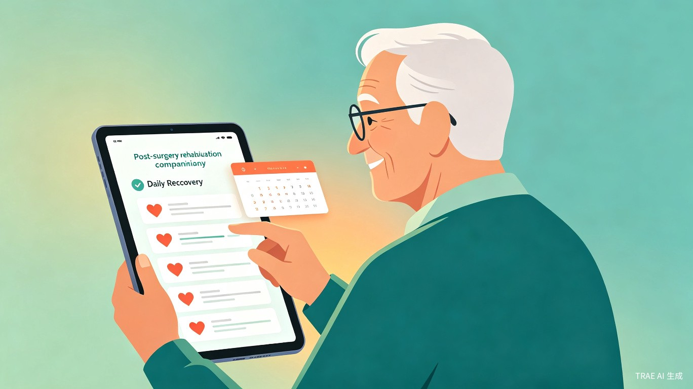
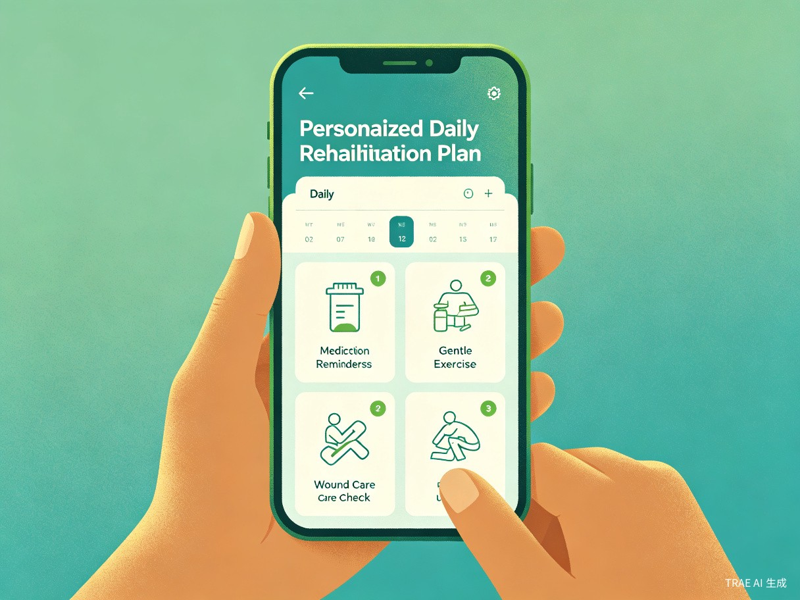
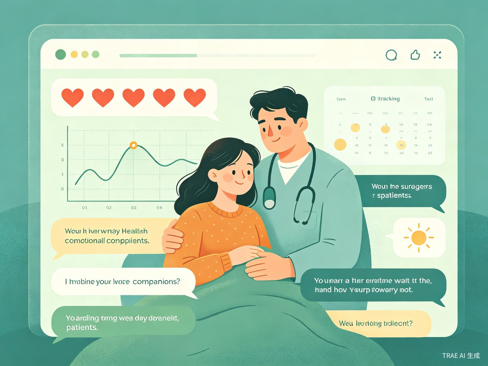

创意介绍
术后患者（尤其是中老年患者）出院后，往往记不清医生的详细嘱咐，不知道哪些行为可以做、哪些是禁忌，康复期容易因误操作导致并发症、恢复缓慢，同时伴随焦虑情绪。
术后康复陪伴助手是一个基于 Flutter 跨端框架 开发的智能康复管理应用，一套代码同时支持微信小程序、iOS/Android App 和网页端。用户输入手术类型、出院时间、个人情况，就能生成个性化的每日康复指南、禁忌事项提醒、并发症预警，同时提供情绪陪伴功能。
技术方案
核心功能
个性化康复计划
根据手术类型和恢复阶段，生成每日康复任务清单，包括用药提醒、饮食建议、运动指导，精准适配个人情况。
禁忌事项查询
想做某件事之前一键查询"能不能做"，如能否坐飞机、能否饮酒、能否运动等，避免误操作导致并发症。
并发症预警
智能监测恢复期异常症状，如发热、红肿、持续疼痛等，及时提醒就医，做到早发现早干预。
情绪陪伴
康复期心理关怀，提供情绪记录、鼓励信息、康复进展可视化，缓解患者孤独焦虑，增强康复信心。


目标用户与痛点
面向用户
刚做完手术出院的患者（各年龄段）、中老年术后患者（记忆力差、对医嘱理解不透彻）、患者家属（想更好地照顾病人但不知道怎么做）。
使用场景
出院回家后每天查看康复计划、想做某件事之前先查"能不能做"、出现不适症状时自查是否正常、家属学习如何照顾术后病人。
当前痛点
- 医生给的注意事项太笼统，没有个性化指导
- 网上信息杂乱，真假难辨，越看越焦虑
- 中老年患者记不住复杂的医嘱
- 并发症早期信号容易被忽视，延误就医
- 康复期孤独焦虑，缺乏情绪支持
使用流程
输入手术信息
填写手术类型、出院日期、个人基本信息
生成康复计划
AI自动生成个性化每日康复指南
每日跟随执行
按计划完成康复任务，记录恢复状态
智能预警陪伴
异常症状及时预警，情绪陪伴全程相伴
价值与意义
降低并发症
减少术后并发症发生率，降低二次就医的医疗资源浪费，为患者节省时间和经济成本。
缓解信息不对称
把医生几小时的口头嘱咐变成可随时查阅的结构化指南，提升患者就医体验。
智慧医疗普惠
特别帮助老年群体跨越医疗信息鸿沟，让优质医疗信息服务惠及每一位患者。
减轻家属负担
为家属提供科学的照护指导，提升家庭照护质量，让关爱更加专业有效。
技术价值
- Flutter 跨端开发，单一代码库覆盖小程序 + App + Web，开发效率高，维护成本低
- 微信生态优先，小程序降低中老年用户使用门槛，扫码即用无需下载
- 多端数据实时同步，无论用哪个端登录，康复计划、提醒记录保持一致
让每一位术后患者都不再迷茫
用科技温暖康复之路，用智能守护每一次恢复
了解项目详情